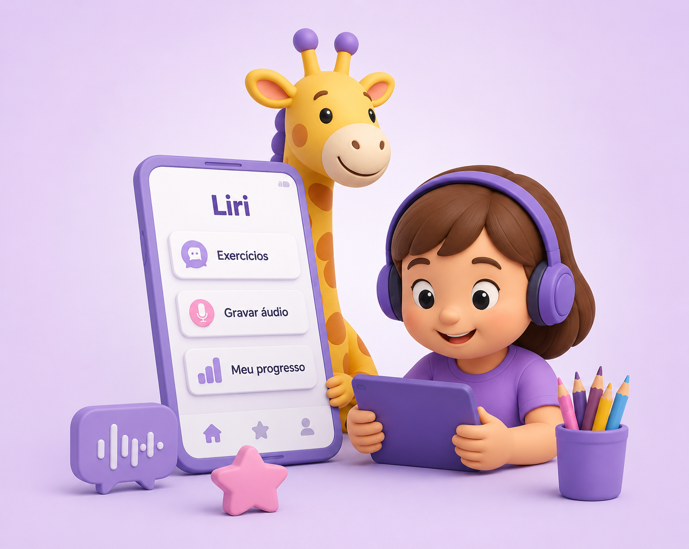

Liri
Liri
Liri
Liri
O Liri conecta o consultório à casa da criança. O fonoaudiólogo prescreve exercícios pelo painel web e a criança pratica no aplicativo, gravando áudios que ficam disponíveis para análise clínica do profissional.

Ferramentas pensadas para a rotina do profissional e o engajamento do paciente.
O profissional monta a rotina do paciente com exercícios do catálogo ou personalizados.
A criança grava sua fala no aplicativo e os áudios ficam disponíveis no painel da fono.
Pontuação, dias ativos e atividades concluídas para acompanhar a evolução do paciente.
Quatro passos para integrar consultório e casa.
A fonoaudióloga cria o paciente no painel web e gera as credenciais de acesso ao aplicativo.
Escolhe exercícios do catálogo ou cria personalizados com palavra, dificuldade e fonema.
A criança acessa o app, realiza os exercícios prescritos e grava sua fala de forma gamificada.
A fono ouve os áudios, vê os relatórios de progresso e ajusta a prescrição conforme a evolução.
Ferramenta desenvolvida para auxiliar na prática de exercícios fonoaudiológicos no ambiente domiciliar, com acompanhamento clínico realizado pelo profissional.